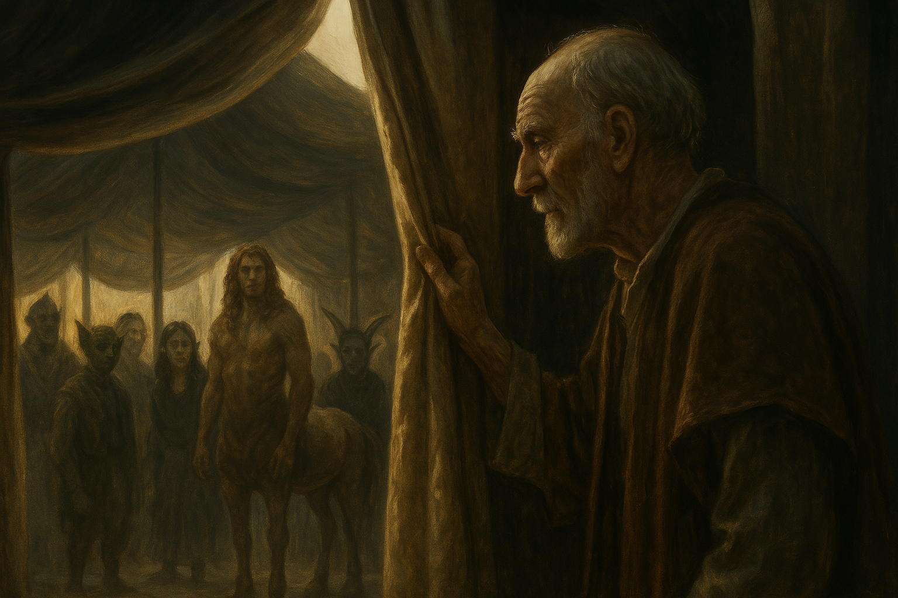

Chapter 3: Fey Senses
Mattington Shattered


Mattington Shattered
15048.11.17
充滿困惑的喜利・歐喜利和法朗茲兩人搞不清楚怎麼夥伴們都不見了，也完全不知道該怎麼辦才好。不久後，老闆又前來敲了敲門。喜利・歐喜利和老闆詢問了剛剛見到的那名白醫師以及夥伴消失的事。老闆簡單說明了白醫師應該是把他的夥伴們傳送到了一個叫妖精荒野(妖精荒野) 的時空去，不過那裡的時間和這裡的流速不太一樣。聽見了妖精荒野，法朗茲表示自己和過去的冒險夥伴也曾去過那裡。
喜利・歐喜利詢問老闆該怎麼去到妖精荒野？老闆表示可以到野外去碰碰運氣，但是機會極低，待在原處等白醫師回來接他們過去可能比較實際一點。喜利・歐喜利和法朗茲試圖補眠，兩人卻怎麼樣也睡不著覺。今晚發生的事情太多、太難以馬上消化了。
一早，老闆又來敲了敲門，給了兩人各一塊麵包，希望他們好過一點，喜利・歐喜利掏錢要給老闆，但老闆表示不用。整個早上喜利・歐喜利也不敢離開房間，以免白醫師回來時找不到人，但是又不知道做什麼好。在法朗茲的提議下，「看起來對拉索斯語有點天份」的喜利・歐喜利也和法朗茲開始簡單的學起了一點點的拉索斯語。
很快的來到了中午時間，老闆又拿了麵包給兩人當午餐。這次在喜利・歐喜利的強烈要求下，老闆終於收下了一枚銅幣。吃完麵包一陣子後，那道白光又出現了。這次喜利・歐喜利學乖了，不再抗拒，兩人轉瞬間消失了。
一天 1在妖精荒野
將整個房間的人傳送了的白醫師看著滿臉困惑的眾人，簡單說明了這裡是個叫妖精荒野的時空，和大家平常居住的時空同時存在，但是互不干擾。在白醫師的確認下，才發現似乎有人被漏掉，沒有被傳送過來，於是白醫師趕緊施了點法術，化為一道白光，然後他便帶著喜利・歐喜利和法朗茲一起出現了。
白醫師表示他和他的群體們最少最少也有能力可以將米多莉身上的症狀暫時中止住，甚至有可能可以將症狀解除也說不定。雖然白醫師不願透露處理的任何細節，但是走投無路的米多莉也只能碰碰運氣了。
在白醫師的帶領下，眾人在這個極大的帳篷底下行走（依照白醫師的估算，要從外面繞這個帳篷走，大概要兩到三個小時才能繞完一圈）。帳篷內除了妖精以外，還有其他奇幻的生物，羊蹄人、半人馬等，說的語言都是很像妖精語，但又不是妖精與的話。在薩梅爾的詢問下，白醫師表示這種語言可以想像成是妖精荒野的普通語。懂一般妖精語的生物大概可以參透50% 這個語言的內容，而如薩梅爾這種擁有妖精血統的生物，有能力可以學會這個語言。同時，因為妖精血統的關係，薩梅爾也有機會可以學會穿越一般時空與妖精荒野的魔法，不過也不能保證他一定學得會。白醫師承諾會在處理好傷患後找人給薩梅爾提點一番。
走到了一個由布幔拉起的角落，白醫師將簾子拉開，表示裡面是平常有人疲累時可以休息的床鋪，讓冒險者們可以在裡面睡一會兒。躺下身子，龍恩感覺到這個絲綢材質的床是他有生以來睡過最舒服的床。白醫師抱著波，準備帶著米多莉一起去進行治療。有點擔憂的喜利・歐喜利詢問是否能跟著去看治療是怎麼進行的。起初，白醫師表示有些技術他們還在嘗試中，因此希望能夠保密，並對喜利・歐喜利感到十分抱歉。想了想後，白醫師向喜利・歐喜利說道，也許他可以想辦法讓他一起來看看，但是為了讓米多莉和波在最短時間內被治療，喜利・歐喜利還是謝絕了白醫師。
帶領著米多莉，白醫師身上抱著熟睡的波，三人走向了帳篷的另一端。路途中，米多莉看見一名披著斗篷的老人和他四目交接，接著便雙手合十，向他朝拜。米多莉不確定該怎麼做，於是也向老人回拜。看見白醫師沒有特別停下腳步，米多莉便也趕緊跟上。
白醫師撥開了一個白色的簾幕，將波和米多莉安置在裡頭的病床上，便暫時離開，去找他的助手。米多莉觀察了一下這裡的空間，除了至少八張以上的病床外，還有幾個上鎖的木櫃，漆成潔白色。不久後，白醫師帶著三名助手進來。他掏出兩顆藥丸，給米多莉選擇：一顆是灰色的，白醫師表示這和一般世界的麻醉是相同的道理；另一顆是色彩閃動的，效果較好，但是不少一般世界的生物吃了以後會有出現幻覺、瘋言瘋語的副作用。米多莉決定吃下彩色的藥丸，並給波吃灰色的。逐漸的，米多莉開始失去各種感官，以及挪動身體的能力。在他閉上眼睛前一刻，他看見助手們推進了一台機器，滋滋作響的機械聲，以及身體輕微的刺痛感……
一天 2在妖精荒野
睡夢中，冒險者們似乎聽見了孩子嬉鬧的笑聲，在身邊此起彼落。薩梅爾也聽見了一陣腳步聲，在青草地上朝他走來，靠得很近，然後離去。
逐漸清醒的喜利・歐喜利看見自己的左側躺了一位沒看過的男性羊蹄人，正用他的雙眼看著喜利・歐喜利，還舔了一下嘴唇。身為40年處男的喜利・歐喜利感到驚慌失措，昨晚睡得太香甜，到底發生什麼事情他不記得。大聲詢問羊蹄人，卻發現羊蹄人似乎聽不懂普通語，只回了一連串他聽不懂的話。另一端也清醒的龍恩看著慌張的喜利・歐喜利，很是滿意。接著，羊蹄人坐起了身子，將簾子拉開，泰然自若地離開了小帳篷。在足夠明亮的視線下，龍恩以及此時都已清醒的夥伴們，都看見喜利・歐喜利的臉上被用紅色的漆料畫上了羊蹄人的圖樣，而且畫得還挺難看的。依然不知道發生什麼事情的喜利・歐喜利站在小帳篷的邊界，一邊和夥伴對話，一邊盯著搖晃著屁股走遠羊蹄人。小帳篷的另一端，兩名妖精撲了進來，在床上開始忘情地翻滾，冒險者們見狀，趕緊把家當收好，離開了小帳篷。在關上簾子後，他們便聽見了小帳篷內傳出了妖精打架的聲音……
YHWH想要找到白醫師，便嘗試和帳篷內可以看見的攤販們詢問，不過不管用妖精與或是普通語，都只得到攤販們疑惑的眼神，以及他完全聽不懂的回應。薩梅爾試圖幫忙，卻也沒有得到更多的解答。就在眾人愁眉苦展之際，薩梅爾感受到了自己的肩膀被拍了一下。一回頭，那人竟是他十多年前早應該往生的阿嬤。
見到早已死去的阿嬤，薩梅爾感到手足無措。阿嬤向薩梅爾的朋友們介紹，自己的名字叫英荻格，並說他另一手牽著的盛裝的哥布林是薩梅爾的阿公。薩梅爾感到滿頭問號，隨後才意識到英荻格是在開玩笑。
英荻格請薩梅爾拿他「往生前」交付給他的魯特琴彈奏，看看他有沒有進步。聽完薩梅爾的演出，英荻格勉為其難地表示的確有進步，但是看來他的天賦可能在其他領域。
薩梅爾問起當初英荻格因病往生時，不是在大家面前嚥下最後一口氣嗎？英荻格表示自己當初找了個替身（謎之音：替身死者）來偽裝自己的死亡，並表示自己只是開了個玩笑罷了。
YHWH向英荻格詢問了不少問題，英荻格邀請大家先來吃頓下午茶，容他好好解釋。走到了帳篷中間一處，不少圓桌擺放著，英荻格請大家自己找椅子坐下，接著他和服務生說了幾句，服務生便端來了各種不同顏色的茶給大家喝，有綠色、藍色、紫色等，和一般世界的茶似乎不太一樣，喝起來更為清爽。接著，服務生也端來了一座點心塔，上面至少放滿了十五盤各式各樣的甜點，每盤上面都有三個小糕點。
在冒險者們新奇的品嚐茶飲與甜點時，英荻格說明了，在這裡大家通常都是用人情作為籌碼進行交易，偶爾可能用點物品以物易物。這頓下午茶，便是英荻格以自己的人情付出，請冒險者們吃的。同時，英荻格也承諾要教薩梅爾以及感覺有些天賦的YHWH這裡的語言：妖精，後續也會嘗試讓薩梅爾學習在一般世界與妖精荒野穿越的魔法。
接著，英荻格也提到了過去這裡的大法師在一百年前曾作出的一則預言：
金屬手臂的女子與他的夥伴將劃破黑暗，帶來前所未有新紀元
鮮血將濺滿妖精荒野，未來的夢將不復存在
妖精荒野大法師
昨日，米多莉、波和冒險者們的到來，讓不少大帳篷內的成員們都意識到預言似乎要應驗了。
病床上，米多莉逐漸清醒。他意識到原本躺在身旁另一張病床上的波似乎消失了，趕緊用手把身體撐了起來—此時，他也發現了自己被炸掉的手好像變得不太一樣了。米多莉的左手動起來一樣靈活，但是現在已經不是肉體，而是十分精巧的機械手臂，使用起來，力道似乎變得更強大。而他原本近乎癱瘓的右手，依然維持肉體，此刻卻似乎能動起來了，不過手肘處似乎被厚厚的包紮了起來，仔細一聽，還能聽到金屬關節的運轉聲。米多莉看見站在診療間的一名助手，便試圖透過比手畫腳的方式和他溝通，助手見狀點了點頭，便離開了。
等了好一陣子，米多莉沒有看見任何人回來，便自己站了起來，離開了診療間。他看見前方不遠處有另一名助手，便朝他走了過去—此時，米多莉也發現自己的步伐變得更為輕盈，跑起來更快了。米多莉向那名助手說了白醫師，助手便帶他到帳篷的一側去。在那裡，白醫師正在和波談天著。波看起來開心無比，而他的右手，也和米多莉一樣是金屬材質的了。波看見米多莉，開心的跑了過來，緊緊抱住米多莉。米多莉感受到波金屬手臂的力道又比以前更強大了。米多莉和白醫師道謝，同時也看見了越來越多大帳篷內的群眾朝著他們圍了過來，雙手合十，向著他們朝拜。
米多莉問起白醫師這是怎麼回事。白醫師表示過去妖精荒野的大法師曾做出了一個預言，而他的預言從來沒有失準過：「金屬手臂的女子與他的夥伴將劃破黑暗，帶來前所未有新紀元」。此刻，米多莉和波兩人都是金屬手臂的女子，因此，他們兩人都被群眾們認為是大帳篷的救世主。米多莉想去見見這名大法師，不過白醫師表示先讓他們倆去見見他們的夥伴，也填一填肚子。
來到下午茶的桌子旁，白醫師拉了額外的幾張椅子，讓米多莉、波一銅加入夥伴們，他也另外向服務生叫了一個新的點心塔以及幾杯茶。見到龍恩，波開心地告訴他現在自己揮拳揮得更厲害了，便一拳朝龍恩的肚子揮了下去，十分疼痛。
在白醫師的說明下，在這裡，人們稱呼他用的是不一樣的名字，這名字不太容易發音，但是如果用一般世界的說法，可以稱為艾爾比，這裡的人也能聽得懂這個名字。如果之後需要找他或英荻格，只要向大帳篷內的人說他們的名字，他們就會幫忙找到人。
冒險者們也向兩人詢問了有關這裡對拉索斯教的認識。英荻格表示拉索斯教利用拉茲特獸的毛皮製作斗篷的技術是從他們這裡偷渡出去的，不過這裡的拉茲特獸是野生的，而且他們都等拉茲特獸老死後，才取用他們的毛皮。在YHWH的央求下，英荻格表示會幫他們拿個幾件斗篷送給他們。
艾爾比也表示雖然大帳篷內沒有感受到拉索斯教的惡意，但是過去的確有過拉索斯教吸收這裡的人作為間諜，因此千萬得小心。
吃飽喝足後，大家前往大法師的攤位。在艾爾比的引薦下，不會說普通語的大法師對米多莉和波做了占卜。首先，大法師向米多莉表示，他的未來會很辛苦，但是如果他能撐過去，他的名字註定會留在歷史中。而對波，大法師表示他的命運和妖精荒野綁在一起，是非常重要的人。米多莉詢問為何這名人類會和妖精荒野有這麼多連結？大法師感受了一下波的手，便表示他的祖先如果不是有妖精的血脈，就是有被妖精祝福過。米多莉也詢問，如果他們兩人當中有一人注定是妖精荒野的救世主，要怎麼去區分？艾爾比表示需要經過一場試煉，才能作出較為精準的判斷。而在米多莉的同意下，艾爾比表示隔日早上可以為他們兩人進行這場試煉。
看見了米多莉和波的金屬手臂，感到非常羨慕的龍恩向大法師詢問，自己能不能也有一支金屬手臂，但是不管他怎麼詢問，都得到大法師的否決，或甚至問題被忽略。最終他賠上了九管治療藥水以及一大塊起司，只得到了大法師表示今晚晚餐加菜的答案，令他感到十分氣餒。
法朗茲也向大法師詢問，自己對拉索斯教的了解，能否幫到妖精荒野什麼忙？大法師表示幫忙當然是好的，但是妖精荒野的命運掌握在救世主的手上，他做的事不會改變世界的走向。
在眾人都詢問完想問的問題後，英荻格帶著YHWH和薩梅爾兩人，以及他的哥布林，先行離開。其他人則跟著艾爾比來到了帳篷的正中心—一棵大樹。大樹上掛著不少線，下面垂著紙條，艾爾比表示這是大帳篷成員們的祈願。接著，艾爾比走向大樹，將手掌放在上面，身體稍微震了一下。他向冒險者們表示，這棵樹可以讓他們回想起一些過去的事。
龍恩走了過去，觸摸了樹，一瞬間看見了樹的兩側各有一具屍體。
喜利・歐喜利拿起他的綴飾，貼著樹，他想起了當時得到這個綴飾的過程。
米多莉表示自己還沒去看過他們昨晚休息的營帳，於是艾爾比便帶著大家走到營帳前。此時，營帳內傳出了謎樣的嬉鬧聲。在討論後，大家決定晚點再過來。不過，艾爾比也表示大家平常都會共用這個營帳來睡覺，他自己也會使用，因此要大家有點心理準備。
另一方面，薩梅爾和YHWH跟著英荻格，來到了英荻格自己的空間。英荻格和哥布林說了幾句話後，哥布林便先離開了。兩人花了一些時間，對妖精的語言有了初步的認識，開始可以聽得懂比較多內容，但還不太會說。
接著，英荻格和兩人確認了他們是否想要學習在妖精荒野與一般時空穿越的能力，薩梅爾表示他有意願，而YHWH在聽聞了沒有妖精血統的生物這樣穿越時可能有記憶出問題的風險後，便決定不學習了。
在英荻格的帶領下，薩梅爾握著他的阿嬤的手，看見英荻格口中念念有詞，接著兩人便穿越回到了一般世界的多倫維爾。薩梅爾感受到距離不久前離開的這裡，天氣明顯變冷了。在英荻格的邀約下，兩人閒逛了一下，薩梅爾發現斯比迪和馬車都不見了，但是勇哥依然還在，只是看起來又更虛弱了。薩梅爾也看見了酒館老闆剛好離開酒館，但還是決定不要上前攀談。接著，英荻格變牽起薩梅爾的手，念了一串不一樣的咒語，另一手抓住一些從妖精荒野帶來的植物穿越回了妖精荒野。穿越完的英荻格明顯看起來有點疲倦。
接著，薩梅爾在英荻格的陪伴下，如法炮製，也進行了一次穿越，十分成功。然而，在回來的這趟，薩梅爾卻無法成功穿越。英荻格便再一次帶著薩梅爾，成功穿越回到妖精荒野。不過可以很明顯的看見，英荻格十分疲憊。
一旁休息的YHWH則握住了他新取得的項鍊，試圖和住在裡面的多姆尼爾進行溝通。和多姆尼爾對話後，YHWH似乎得到了不少有用的資訊，而多姆尼爾也期許YHWH可以好好的在這裡做有趣的事。
在眾人相會後，大家也陪著YHWH和薩梅爾一起到帳篷中心的大樹（這裡的人稱它為中心樹中心樹），嘗試喚起回憶。在艾爾比的說明下，這棵樹除了讓觸摸的人取得回憶（除了自己的回憶，甚至是在自己出生前的回憶），也同時是妖精荒野存取集體知識的寶庫，雖然有些內容會被刻意的封鎖住。同時，觸摸者也能對樹提出問題，從中嘗試取得答案。
因為有些人先前在觸碰樹時沒有得到任何回應，幾位冒險者在艾爾比的協助下，再度觸摸中心樹。這一次，他們明顯感應到更明確的東西了。米多莉看見了過去如姊姊般的小雪正在和他道別；而龍恩則聽到了一個他很肯定自己聽過的聲音，說著他聽不懂的語言。龍恩清醒後，嘗試復述他聽到的那段話，而喜利・歐喜利似乎有印象自己聽過這樣的語言。再次嘗試後，龍恩聽見了同一個聲音，喚著他今晚在這裡等他。
眾人決定先去吃晚餐。在英荻格與艾爾比的帶領下，大家走到了一個小布簾內，在圓桌旁各自拉了椅子。不久後，有人端了一大鍋食物來，仔細一看，裡面是濃郁的起士火鍋，而起士的來源，想必就是龍恩為了求金屬手臂，獻給大法師的食材。眾人大快朵頤了起來，連酷爆都吃的津津有味。不久後，大法師也走入了簾子內，加入大家一起享用晚餐。
吃飽後，YHWH和龍恩決定再去一次中心樹，其他人則回到休息區睡覺。終於發現自己臉上被畫上橘紅色塗鴉的喜利・歐喜利，趕緊找了水將臉洗淨。在洗臉的噴泉旁，他看見了一支橘紅色的蠟筆，丟在地上，於是他趕緊將蠟筆收了下來。
YHWH試圖從中心樹讀取和闖入妖精荒野的拉索斯教信徒有關的資訊，他看見了幾百年前，一名與其他人幾無相差的人被整個妖精荒野的群眾架起並拷問，但是他後來去了哪裡？被問了什麼問題？都像是被隱藏起來了一樣。詢問過艾爾比後，YHWH只知道這人現在被囚禁了起來，但艾爾比也不願透露他被關押在哪裡。看著坐在地上打坐的龍恩，YHWH決定先回去睡覺了。
龍恩靜靜打坐著，不知道何時會等到那位身分不明的人。在他快睡著之際，他聽見了一陣重重的腳步聲向他走近，他感受到盤著的腿上被放了一個重物，然後腳步聲逐漸離去。那聲音在他腦中說著「這是你跟神要到的」。
龍恩睜開眼，看見腿上放了一個用牛皮紙包覆起來，長長的東西。輕輕打開，一個玻璃容器，裝著一隻乾枯的手。雖然不是金屬的手，但龍恩從它的表面感受到了無法想像的強大魔法能量。摸著這隻手，一陣不屬於他的記憶衝入他的腦中，過去很多人將自己的手砍斷，將這隻手接上，換得了極為強大的力量。而最早最早，這隻手的主人，似乎是一隻巫妖。
龍恩興奮的跑回大家睡覺的帳篷，喚醒了米多莉，要請米多莉用他的巨斧幫他把右手砍斷，以接上這隻來路不明的手。兩人的討論引起了還沒睡著的喜利・歐喜利的注意。三人決定先離開帳篷，再進行討論。喜利・歐喜利認為這東西看起來有幾分邪惡的氣味，但是在米多莉的感應下，沒有感知到什麼奇怪之處。龍恩成功說服了米多莉幫助他，但喜利・歐喜利還是非常不放心，於是三人先去了艾爾比的手術室，喜利・歐喜利再去找艾爾比，請他幫忙評估，甚至動手術。
艾爾比了解了狀況後，來到手術室，和龍恩溝通。他不拒絕幫龍恩把手臂砍斷，但是是否要接上這隻手，那就是要交給龍恩做決定的了。餵了龍恩劑量不大的麻藥後，艾爾比用了各種工具，透過精細的手術，將龍恩的肌膚切開，然後把骨頭砍斷。接著，龍恩用自己的左手，把那隻手接上他斷開的右手。肌膚很快地就癒合在一起，龍恩甚至能像使用自己的手一樣，輕鬆的操控他。原本乾枯的表皮，像是注入了藥物一般，瞬間充滿了血色，變得強壯，甚至連青筋都爆了出來。在感謝過艾爾比後，龍恩和兩位夥伴便回到帳篷睡覺去了。
夜裡，喜利・歐喜利看見大家都睡著了，便偷偷摸摸地拿起他撿到的蠟筆，在大家的臉上開始塗鴉，當中只有波和米多莉被放過了。在爬到床的另一側時，他看見了那位羊蹄人，對著他笑。喜利・歐喜利對羊蹄人的惡作劇感到十分欣賞。羊蹄人接著從口袋拿出了另一隻紫色的蠟筆，開始在喜利・歐喜利的創作上加工。完工後，羊蹄人從口袋拿出了一整組12色的蠟筆，想要送給喜利・歐喜利作為禮物，喜利・歐喜利也欣然接受了，拿出了自己身上的東西做為交換。
15048.11.17
Confused, Siri and Franz couldn't figure out why their friends were missing, and they had no idea what to do. Not long after, the boss came and knocked on the door again. Siri and the boss asked about the disappearance of Dr. White and his companions whom they had just met. The boss briefly explained that Dr. White should have teleported his friends to a time and space called the Feywild (Feywild), but the time there was different from the flow rate here. After hearing the Feywild, Franz said that he and his past adventure partners had also been there.
Siri asked the boss how to get to the Feywild? The boss said that they could try their luck in the wild, but the chance was extremely low. It might be more practical to stay where they were and wait for Dr. White to come back and pick them up. Siri and Franz tried to catch up on their sleep, but they couldn't fall asleep. Too much happened tonight, too much to digest right away.
Early in the morning, the boss knocked on the door again and gave the two of them a piece of bread each, hoping that they would feel better. Siri paid for it and wanted to give it to the boss, but the boss said no. Siri didn't dare to leave the room all morning in case Dr. White came back and couldn't find anyone but didn't know what to do. At Franz's suggestion, Siri, who "seems to be a little talented in Lathos", also started to learn a little bit of Lathos with Franz.
Soon it was noon time, and the boss brought bread for the two of them for lunch. This time, under Siri’s strong request, the boss finally accepted a copper coin. After eating the bread for a while, the white light appeared again. This time Siri learned the lesson and stopped resisting, and the two of them disappeared in an instant.
Day 1 in the Feywild
Dr. White, who teleported the entire room, looked at the confused people and briefly explained that this is a time and space called the Feywild, which exists at the same time as the time and space that everyone usually lives in, but does not interfere with each other. After Dr. White's confirmation, it was discovered that someone seemed to have been missed and had not been teleported, so Dr. White quickly cast some magic and turned it into a white light, and then he appeared with Siri and Franz.
Dr. White said that he and his team are at least capable of temporarily suspending the symptoms of Midori, and may even be able to relieve the symptoms. Although Dr. White would not disclose any details of the process, Midori, who was desperate, could only try his luck.
Under the leadership of Dr. White, everyone walked under this huge tent (according to Dr. White's estimate, it would take about two to three hours to complete a circle around this tent from the outside). In addition to goblins, there are other fantasy creatures in the tent, such as satyrs, centaurs, etc. The languages they speak are very similar to goblins, but they are not the language of goblins. When asked by Samael, Dr. White said that this language can be imagined as the Feywild's Mandarin. Creatures that understand ordinary fairy language can probably understand 50% of the content of this language, and creatures with fairy blood such as Samael have the ability to learn this language. At the same time, because of the fairy blood, Samael also has the opportunity to learn the magic of traveling through normal time and space with the Feywild, but there is no guarantee that he will learn it. Dr. White promised to find someone to give Samael some advice after the injury was taken care of.
Walked to a corner drawn up by a cloth curtain, Dr. White opened the curtain, indicating that it was a bed where people could usually rest when they were tired, so that the adventurers could sleep in it for a while. Lying down, Ron felt that this silk bed was the most comfortable bed he had ever slept on. Dr. White is holding Beau and preparing to take Midori with him for treatment. Siri, a little concerned, asked if she could tag along to see how the treatment was performed. At first, Dr. White said that they were still trying out some technologies, so they wanted to keep them secret, and felt very sorry for Siri. After thinking about it, Dr. White said to Siri that maybe he could find a way to let him come and take a look. However, in order to let Midori and Beau be treated in the shortest time, Siri declined Dr. White.
Leading Midori and Dr. White holding the sleeping Beau on his body, the three of them walked to the other end of the tent. On the way, Midori saw an old man in a cloak and made eye contact with him. Then he clasped his hands and worshiped him. Midori was not sure what to do, so he bowed back to the old man. Seeing that Dr. White didn't particularly stop, Midori quickly followed suit.
Dr. White opened a white curtain, placed Beau and Midori on the hospital bed inside, and then left temporarily to find his assistant. Midori observed the space here. In addition to at least eight or more hospital beds, there were also several locked wooden cabinets painted pure white. Soon after, Dr. White came in with three assistants. He took out two pills and gave Midori a choice: one was gray, which Dr. White said was the same as anesthesia in the ordinary world; the other was flashing in color and had better effects, but many creatures in the ordinary world would have side effects of hallucinations and crazy talk after taking it. Midori decided to take the colored pills and give Beau the gray ones. Gradually, Midori began to lose all senses and the ability to move his body. The moment before he closed his eyes, he saw the assistants pushing a machine, the sizzling mechanical sound, and the slight tingling sensation in the body...
Day 2 in the Feywild
In their sleep, the adventurers seemed to hear the playful laughter of children, rising and falling around them. Samael also heard footsteps, walking towards him on the green grass, getting very close, and then leaving.
Siri gradually woke up and saw a male satyr lying on his left side that he had never seen before. He was looking at Siri with his eyes and licked his lips. Siri, a virgin of 40 years, is panicking. He slept so soundly last night that he can't remember what happened. He asked the Satyr loudly, but found that the Satyr seemed unable to understand Mandarin and only replied with a series of words he did not understand. Ron, who was also awake on the other end, looked at the panicked Siri and was very satisfied. Then, the Satyr sat up, opened the curtain, and left the small tent calmly. Under bright enough sight, Ron and his friends, who were all awake at this time, saw that Siri's face was painted with a pattern of a satyr with red paint, and the painting was quite ugly. Siri, who still didn't know what was going on, stood at the edge of the small tent, talking to her companions, and staring at the Satyr swaying away. At the other end of the small tent, two goblins rushed in and began to roll over on the bed. Seeing this, the adventurers quickly packed up their belongings and left the small tent. After closing the curtain, they heard the sound of goblins fighting in the small tent...
YHWH wanted to find Dr. White, so he tried to ask the vendors who could be seen in the tent. However, no matter whether they used goblins or Mandarin, they only got confused looks from the vendors and responses that he could not understand at all. Samael tried to help, but couldn't get any more answers. Just when everyone was frowning, Samael felt a tap on his shoulder. When he turned around, he realized that the person was his grandmother who should have passed away more than ten years ago.
Seeing the long-dead grandma, Samael felt at a loss. Grandma introduced her name to Samael's friends and said that the dressed-up goblin he was holding on the other hand was Samael's grandfather. Samael felt doubtful, then realized that Indigo was joking.
Indigo asked Samael to play the lute given to him "before his death" to see if he has made any progress. After listening to Samael's performance, Indigo reluctantly said that there was indeed progress, but it seems that his talent may be in other areas.
Samael asked when Indigo passed away due to illness, didn't he take his last breath in front of everyone? Indigo said that he had found a stand-in (Mysterious Voice: Stand-in Dead) to fake his death, and said that he was just joking.
YHWH asked a lot of questions to Indigo. Indigo invited everyone to have afternoon tea first and let him explain. Walking to the middle of the tent, there were many round tables. Indigo asked everyone to find their own chairs and sit down. Then he said a few words to the waiter, and the waiter brought tea of various colors for everyone to drink, including green, blue, purple, etc. It seemed different from the tea in the ordinary world and tasted more refreshing. Then, the waiter also brought a dessert tower, which was filled with at least fifteen plates of various desserts, with three small pastries on each plate.
When the adventurers tasted novel tea and desserts, Indigo explained that here everyone usually uses favors as chips for transactions, and occasionally may use some items to barter. This afternoon tea is what Indigo treats the adventurers as a favor. At the same time, Indigo also promised to teach Samael and YHWH who feels a little talented. The language here: Fey. In the future, he will also try to let Samael learn the magic of traveling through the ordinary world with the Feywild.
Next, Indigo It also mentioned a prophecy made by the Archmage here a hundred years ago:
The woman with the metal arm and his companions will break through the darkness and bring about an unprecedented new era
Blood will be splashed all over the Feywild, and the dream of the future will cease to exist
the Feywild Archmage
Yesterday, Midori, Beau The arrival of adventurers and adventurers made many members in the big tent realize that the prophecy seemed to be coming true.
On the hospital bed, Midori gradually woke up. He realized that Beau, who was lying on another hospital bed next to him, seemed to have disappeared, and he quickly raised his body up with his hands. At this time, he also discovered that his hand that had been blown off seemed to be different. Midori's left hand is still flexible, but now it is no longer a body, but a very delicate mechanical arm. When used, the strength seems to become more powerful. His nearly paralyzed right hand, which was still physically intact, seemed to be able to move at this moment, but the elbow seemed to be thickly bandaged. If you listened carefully, you could still hear the sound of metal joints running. Midori saw an assistant standing in the diagnosis and treatment room, and tried to communicate with him through gestures. The assistant nodded and left.
After waiting for a long time, Midori didn't see anyone coming back, so he stood up and left the diagnosis and treatment room. He saw another assistant not far ahead, and walked towards him. At this time, Midori also found that his steps became lighter and he ran faster. Midori said Dr. White to the assistant, who took him to the side of the tent. There, Dr. White is chatting with Beau. Beau looks very happy, and his right hand is made of metal like Midori. When Beau saw Midori, he ran over happily and hugged Midori tightly. Midori feels the power of Beau's metal arm is stronger than before. Midori thanked Dr. White, and at the same time saw more and more people in the big tent surrounding them, clasping their hands, and worshiping them.
Midori asked Dr. White what was going on. Dr. White said that the Archmage of the Feywild had made a prophecy in the past, and his prophecy had never been inaccurate: "The woman with the metal arm and her companions will break through the darkness and bring about an unprecedented new era." At this moment, Midori and Beau are both women with metal arms, so both of them are considered by the masses to be the saviors of the big tent. Midori wanted to meet this archmage, but Dr. White said that they should first meet their partners and fill their stomachs.
Arriving at the afternoon tea table, Dr. White pulled up a few extra chairs and let Midori and Beau join his friends. He also asked the waiter for a new snack tower and a few cups of tea. Seeing Ron, Beau happily told him that he could punch harder now, and punched Ron in the stomach, which was very painful.
Under Dr. White's explanation, here, people call him a different name. This name is not easy to pronounce, but if you use the common world's parlance, it can be called Elby, and people here can also understand this name. If you need to find him or Indigo later, just say their name to the people in the big tent and they will help find you.
The adventurers also asked the two about their knowledge of the Rathos religion here. Indigo means that the Rathos cult's technology of using the fur of the Razite beast to make cloaks was smuggled out from them, but the Razite beasts here are wild, and they wait until the Razite beast dies of old age before using their furs. At YHWH's request, Indigo said that he would help them get some cloaks for them.
Elby also said that although there was no malice from the Rathos Cult in the big tent, the Rathos Cult did recruit people here as spies in the past, so be careful.
After eating and drinking, everyone went to the Archmage’s stall. Under Elby's recommendation, the Archmage, who did not speak Mandarin, performed a divination on Midori and Beau. First, the Archmage told Midori that his future will be difficult, but if he can survive it, his name is destined to remain in history. As for Beau, the Archmage said that his fate is tied to the Feywild and he is a very important person. Midori asked why this human being has so many connections with the Feywild? The Archmage felt the hand of Beau and said that his ancestors either had the blood of Fey or were blessed by Fey. Midori also asked, if one of them is destined to be the Feywild's savior, how to tell the difference? Elby said that it takes a trial to make a more accurate judgment. And with Midori's agreement, Elby said that the trial could be held for both of them the next morning.
Seeing the metal arms of Midori and Beau, Ron felt very envious and asked the Archmage if he could also have a metal arm, but no matter how he asked, he was rejected by the Archmage, or even the question was ignored. In the end, he lost nine tubes of healing potions and a large piece of cheese, and only received the answer from the Archmage that he would add extra dishes to dinner tonight, which made him feel very discouraged.
Franz also asked the Archmage whether his understanding of the Rathos religion could be of any help to the Feywild? The Archmage said that it is of course good to help, but the fate of the Feywild is in the hands of the savior, and what he does will not change the direction of the world.
After everyone asked the questions they wanted to ask, Indigo took YHWH and Samael, as well as his goblin, and left first. The others followed Elby to the center of the tent—a large tree. There are many threads hanging on the big tree, and notes hanging below. Elby said these are the prayers of the members of the big tent. Then, Elby walked towards the big tree, placed his palms on it, and his body shook slightly. He told the adventurers that this tree could remind them of something from the past.
Ron walked over, touched the tree, and instantly saw a corpse on each side of the tree.
Siri picked up his ornament and pressed it against the tree. He remembered the process of getting this ornament.
Midori said that he had not seen the camp where they rested last night, so Elby led everyone to the camp. At this time, mysterious sounds of frolicking came from the camp. After discussion, everyone decided to come back later. However, Elby also said that everyone usually shares this tent for sleeping, and he also uses it himself, so everyone needs to be mentally prepared.
On the other hand, Samael and YHWH followed Indigo and came to Indigo's own space. Indigo After saying a few words to the goblin, the goblin left first. The two spent some time and got a preliminary understanding of Fey's language. They could understand more of Fey's language at first, but they were not very good at speaking it yet.
Then, Indigo and the two of them confirmed whether they wanted to learn the ability to travel between the Feywild and normal time and space. Samael said he was willing, but YHWH decided not to learn after hearing that creatures without fairy blood might have memory problems when traveling like this.
Under the leadership of Indigo, Samael held his grandma's hand and saw Indigo mumbling words, and then the two of them traveled back to Dorrenville in the ordinary world. Samael I feel that the weather has become noticeably colder since I left here not long ago. At the invitation of Indigo, the two strolled around for a while. Samael found that Speedy and the carriage were gone, but Yung was still there, but looked weaker. Samael also saw the tavern owner just leaving the tavern, but decided not to come forward to talk. Then, Indigo took Samael's hand, recited a different spell, grabbed some plants brought from the Feywild with the other hand, and traveled back to the Feywild. Indigo clearly looks a little tired after traveling through time.
Then, Samael, accompanied by Indigo, followed the same example and made a time travel, which was very successful. However, on this trip back, Samael was unable to successfully cross. Indigo once again took Samael with him and successfully traveled back to the Feywild. But it can be clearly seen that Indigo is very tired.
YHWH, who was resting on the side, held his newly obtained necklace and tried to communicate with Domneil who lived inside. After talking to Domneil, YHWH seems to have gotten a lot of useful information, and Domneil also hopes that YHWH can do interesting things here.
After everyone met, everyone also accompanied YHWH and Samael to the big tree in the center of the tent (people here call it the Center Tree), trying to evoke memories. According to Elby's explanation, this tree not only allows those who touch it to obtain memories (in addition to their own memories, even memories before they were born), it is also a treasure house for the Feywild to access collective knowledge, although some contents will be deliberately blocked. At the same time, touchers can also ask questions about the tree and try to get answers from it.
Because some people did not get any response when they touched the tree before, several adventurers, with the assistance of Elby, touched the central tree again. This time, they clearly sensed something more clear. Midori saw his former sister Yuki saying goodbye to him; and Ron heard a voice he was sure he had heard speaking a language he did not understand. After Ron regained consciousness, he tried to repeat the speech he heard, and Siri seemed to have the impression that he had heard such language. After trying again, Ron heard the same voice calling him to wait here for him tonight.
Everyone decided to have dinner first. Under the leadership of Indigo and Elby, everyone walked into a small curtain and pulled up their chairs at the round table. Not long after, someone brought a large pot of food. After a closer look, it was a rich cheese hot pot. The source of the cheese must be the ingredients that Ron dedicated to the Archmage in order to obtain a metal arm. Everyone feasted, even Kubao ate with gusto. Soon after, the Archmage also walked into the curtain and joined everyone to enjoy dinner.
After eating, YHWH and Ron decided to go to the central tree again, while the others returned to the rest area to sleep. Siri, who finally discovered that there were orange graffiti on her face, quickly found water to wash her face. Beside the fountain where he washed his face, he saw an orange-red crayon thrown on the ground, so he quickly put the crayon away.
YHWH tried to read information from the central tree about the Rathos believers who broke into the Feywild. He saw that hundreds of years ago, a man who was almost the same as others was picked up and tortured by the entire crowd of the Feywild, but where did he go after that? What questions were asked? It's like they're all hidden. After asking Elby, YHWH only knew that the man was now imprisoned, but Elby would not reveal where he was being held. Looking at Ron sitting on the ground meditating, YHWH decided to go back to sleep first.
Ron Sitting quietly, I don’t know when I will wait for the unknown person. Just as he was about to fall asleep, he heard heavy footsteps approaching him. He felt a heavy object being placed on his crossed legs, and then the footsteps gradually left. The voice in his head said, "This is what you and God want."
Ron Opened his eyes and saw a long object wrapped in brown paper on his lap. Opening it gently, a glass container contained a withered hand. Although it is not a metal hand, Ron feels unimaginably powerful magical energy from its surface. Touching this hand, a burst of memories that did not belong to him rushed into his mind. In the past, many people cut off their hands and reattached this hand, gaining extremely powerful strength. At the earliest, the owner of this hand seemed to be a lich.
Ron excitedly ran back to the tent where everyone was sleeping, woke up Midori, and asked Midori to use his giant ax to help him cut off his right hand to reattach the hand of unknown origin. The discussion between the two attracted the attention of Siri, who was still asleep. The three decided to leave the tent before discussing. Siri thought this thing looked a bit evil, but under the induction of Midori, nothing strange was detected. Ron successfully persuaded Midori to help him, but Siri was still very uneasy, so the three of them went to Elby's operating room first, and Siri went to Elby to ask him to help evaluate and even perform surgery.
After Elby understood the situation, he came to the operating room and communicated with Ron. He did not refuse to cut off Ron's arm, but it was up to Ron to decide whether to reattach the hand. After feeding Ron a small dose of anesthetic, Elby used various tools to cut Ron's skin and chop off the bones through delicate surgery. Then, Ron used his left hand to connect that hand to his broken right hand. The skin heals together quickly, and Ron can even control it as easily as using your own hands. The originally dry epidermis, as if injected with medicine, was instantly filled with blood and became strong, with even veins popping out. After thanking Elby, Ron and his two companions went back to the tent to sleep.
At night, when Siri saw everyone asleep, he secretly picked up the crayon he picked up and started scribbling on everyone's faces. Only Beau and Midori were spared. As he climbed to the other side of the bed, he saw the satyr smiling at him. Siri admires the Satyr's mischief. The Satyr then took out another purple crayon from his pocket and began working on Siri's creation. After the completion, the Satyr took out a set of 12-color crayons from his pocket and wanted to give it to Siri as a gift. Siri readily accepted it and took out what he had on him in exchange.